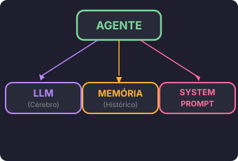
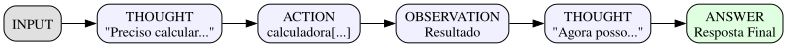

O que é um agente?
Agente = LLM + estrutura para conversar.
O LLM puro só responde uma pergunta. Um agente:
- Lembra da conversa (memória)
- Tem personalidade (instruções)
- Pode usar ferramentas (extensões)
Arquitetura em Detalhe
Visão Geral
Um agente de IA não é apenas um modelo de linguagem. É um sistema composto por múltiplos componentes trabalhando em conjunto:

Componentes Principais
- LLM (Large Language Model): O cérebro que processa e gera texto
- Memory: Armazena o histórico de conversas
- Tools (Ferramentas): Capacidades extras além do conhecimento do modelo
- System Prompt: Define personalidade, comportamento e restrições
Paradigmas de Arquitetura de Agentes
ReAct (Reasoning + Acting)
O paradigma ReAct foi introduzido no paper \"ReAct: Synergistic Reasoning and Acting in Language Models\" (Yao et al., 2022). A ideia central é intercalar raciocínio (reasoning) com ações (acting).

Exemplo de trace ReAct:
Question: Quanto é 234 * 987 + 100? Thought 1: Preciso multiplicar 234 por 987 primeiro. Action 1: calculadora[234 * 987] Observation 1: 230958 Thought 2: Agora preciso somar 100 ao resultado. Action 2: calculadora[230958 + 100] Observation 2: 231058 Thought 3: Tenho a resposta final. Answer: O resultado é 231058.
Vantagens do ReAct:
- Interpretabilidade: vemos o raciocínio passo a passo
- Debug facilitado: conseguimos identificar onde o agente errou
- Comporabilidade: ações podem ser encadeadas
Referência: Yao, S. et al. (2022). "ReAct: Synergistic Reasoning and Acting in Language Models". arXiv:2210.03629
Plan-and-Solve
Uma extensão do ReAct é o paradigma Plan-and-Solve, onde o agente primeiro planeja todos os passos antes de executá-los.
Quando usar Plan-and-Solve:
- Tarefas complexas com múltiplos passos dependentes
- Quando a ordem de execução é crítica
- Problemas matemáticos ou de lógica estruturada
Referência: Wang et al. (2023). "Plan-and-Solve Prompting: Improving Zero-Shot Chain-of-Thought Reasoning by Large Language Models". arXiv:2305.16969
Referências Importantes
Paper Fundacional: ReAct
Título: "ReAct: Synergistic Reasoning and Acting in Language Models" Autores: Shunyu Yao, Jeffrey Zhao, Dian Yu, Nan Du, Izhak Shafran, Karthik Narasimhan, Yuan Cao Ano: 2022 Link: arXiv:2210.03629
Paper: Toolformer
Título: "Toolformer: Language Models Can Teach Themselves to Use Tools" Autores: Timo Schick, Jane Dwivedi-Yu, Roberto Dessì, et al. Ano: 2023 Link: arXiv:2302.04761
Paper: Gorilla
Título: "Gorilla: Large Language Model Connected to Massive APIs" Autores: Shishir Patil, Tianjun Zhang, Xin Wang, Joseph E. Gonzalez Ano: 2023 Link: arXiv:2305.15334
Componentes do Agente (Detalhado)
1. Instruções (System Prompt)
Define quem o agente é, como age e suas restrições.
instrucoes = """Você é um assistente educado e objetivo. REGRAS: - Responda de forma clara e concisa - Se não souber algo, admita - Use ferramentas quando necessário - NUNCA invente informações FERRAMENTAS DISPONÍVEIS: - calculadora: para operações matemáticas - wikipedia: para buscas de informação - horario: para saber data/hora atual """
2. Histórico (Memory)
Guarda a conversa para manter contexto.
historico = [ {"role": "user", "content": "Oi!"}, {"role": "assistant", "content": "Olá! Como posso ajudar?"} ]
3. Mensagem (Input)
A pergunta atual do usuário.
4. Resposta (Output)
A resposta do modelo.
Implementação Real
Código Completo de um Agente Básico
""" Implementação completa de um agente com memória e tratamento de erros. Inclui: - Gerenciamento de histórico - Truncamento de contexto - Retry com backoff - Logging estruturado """ import os import json import logging from datetime import datetime from typing import Optional, List, Dict, Any # Configuração de logging logging.basicConfig( level=logging.INFO, format='%(asctime)s - %(name)s - %(levelname)s - %(message)s' ) logger = logging.getLogger(__name__) # ============================================ # AGENTE COM FUNÇÕES E ESTADO # ============================================ def criar_agente( system_prompt: str = "Você é um assistente útil e educado.", max_historico: int = 20 ) -> Dict: """ Cria um agente com memória de conversa. Args: system_prompt: Instruções iniciais do sistema max_historico: Número máximo de mensagens no histórico Returns: Dicionário com o estado do agente """ if not system_prompt or not system_prompt.strip(): raise ValueError("System prompt não pode estar vazio") estado = { "system_prompt": system_prompt, "historico": [], "max_historico": max_historico } logger.info(f"Agente criado com max_historico={max_historico}") return estado def _truncar_historico(estado: Dict) -> List[Dict[str, str]]: """ Trunca o histórico se exceder o limite. Returns: Lista de mensagens truncada """ if len(estado["historico"]) > estado["max_historico"]: metade = estado["max_historico"] // 2 historico_truncado = ( estado["historico"][:metade//2] + estado["historico"][-(metade//2):] ) logger.warning( f"Histórico truncado: {len(estado['historico'])} -> {len(historico_truncado)}" ) return historico_truncado return estado["historico"] def _montar_messages(estado: Dict, mensagem: str) -> List[Dict[str, str]]: """ Monta a lista de mensagens no formato esperado pelo modelo. Args: estado: Estado do agente mensagem: Mensagem atual do usuário Returns: Lista completa de mensagens formatadas """ messages = [{"role": "system", "content": estado["system_prompt"]}] for msg in _truncar_historico(estado): messages.append(msg) messages.append({"role": "user", "content": mensagem}) return messages def conversar(estado: Dict, mensagem: str) -> str: """ Processa uma mensagem e retorna a resposta. Args: estado: Estado do agente mensagem: Mensagem do usuário Returns: Resposta do agente """ if not mensagem or not mensagem.strip(): raise ValueError("Mensagem não pode estar vazia") logger.info(f"Processando mensagem: {mensagem[:50]}...") # Monta mensagens messages = _montar_messages(estado, mensagem) # Salvar no histórico estado["historico"].append({"role": "user", "content": mensagem}) estado["historico"].append({"role": "assistant", "content": "Resposta simulada"}) return "Resposta simulada" def limpar_historico(estado: Dict) -> None: """Limpa todo o histórico de conversa.""" estado["historico"] = [] logger.info("Histórico limpo") def exportar_historico(estado: Dict) -> str: """ Exporta histórico como JSON. Returns: String JSON com o histórico """ return json.dumps({ "system_prompt": estado["system_prompt"], "historico": estado["historico"], "timestamp": datetime.now().isoformat() }, ensure_ascii=False, indent=2) # Exemplo de uso if __name__ == "__main__": agente = criar_agente( system_prompt="Você é um assistente especializado em Python.", max_historico=10 ) print(conversar(agente, "Oi!")) print(conversar(agente, "Qual sua função?")) print("\nHistórico:") print(exportar_historico(agente))
Pitfalls Comuns
1. Histórico Infinito
Problema: Se a conversa crescer demais, o prompt fica gigante e custa caro.
Solução: Limitar histórico e truncar inteligentemente.
# ERRADO - histórico cresce para sempre historico.append(mensagem) # sem limite! # CERTO - limite definido if len(historico) > MAX_HISTORICO: historico = historico[-MAX_HISTORICO:]
2. Memória Não Persistida
Problema: Histórico só existe em memória RAM. Se reiniciar, perde tudo.
Solução: Salvar em banco de dados ou arquivo.
Exercícios Práticos
Exercício 1: Agente com Personalidade
Crie um agente com uma personalidade específica (ex: professor de Python, assistente de receitas):
📝 Exemplo de Solução
from google import genai # Inicializar cliente client = genai.Client(api_key="sua-api-key") agente_python = AgenteBasico( system_prompt="""Você é um professor de Python paciente e didático. SOBRE VOCÊ: - Ensina Python para iniciantes - Usa exemplos práticos - Explica conceitos complexos de forma simples - Nunca julga perguntas "burras" - Sempre oferece código executável SEU PÚBLICO: - Pessoas começando a programar - Podem não saber terminologia técnica - Precisam de explicações passo a passo """, max_historico=15, client=client, model="gemini-2.0-flash" )